Getting Start
Environment setting
Composer
- Step 1: Download Composer from HERE
Initalize a new project
Approach 1:
The documentation can be found at https://laravel.com/docs/5.8
composer create-project --prefer-dist laravel/laravel projectName
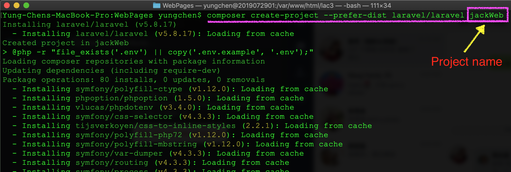
Approach 2:
You can use following instructions to create a Laravel project:
laravel new projectName
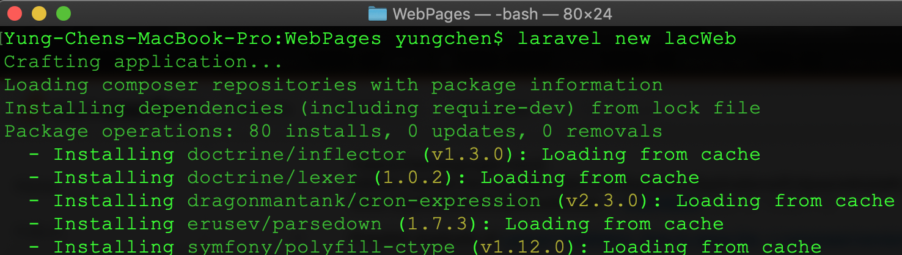
Troubleshooting
If you got the truble with thelaravel new projectName instruction on Mac System, then you can apply following steps to solve the problem.
- Step 1: edit '~/.bash_profile'
vim ~/.bash_profile - Step 2: add
export PATH=~/.composer/vendor/bin:$PATHto .bash_profile file - Step 3: Reopen the Terminal and excute
laravel new projectNameinstruction again to create the new project.
Preview the result of laravel project
run the following instructions in Termial, then the tool will show the link address.
php artisan serve
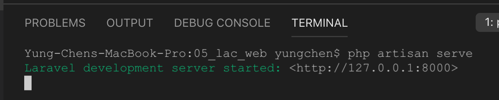 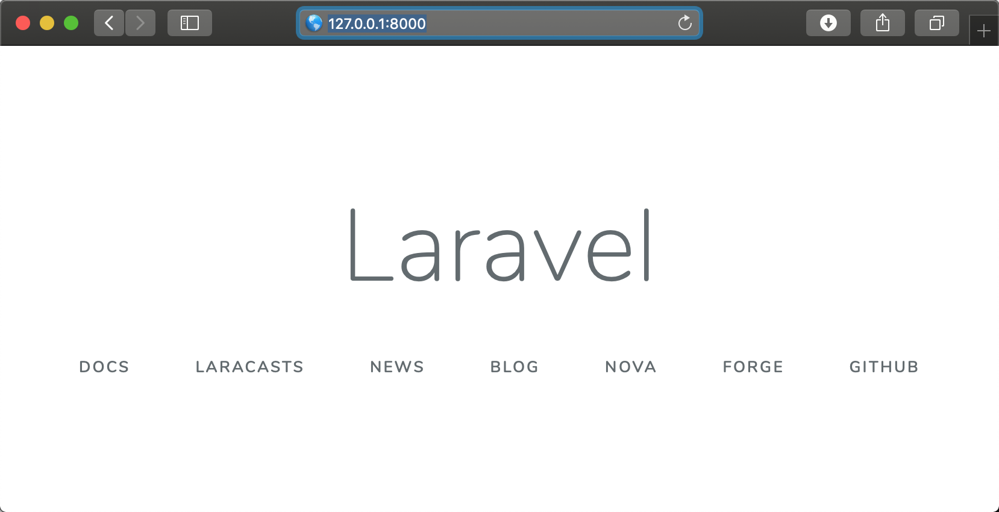
Using xampp to preview Laravel project
Mac OS
- Step 1: install apache on Mac
- Step 2: download MySQL server dmg file from [HERE ]
- Step 3: edit .bash_profile file in user's home folder
vim ~/.bash_profilethen addexport PATH="/usr/local/mysql/bin:$PATH"setting into the file. 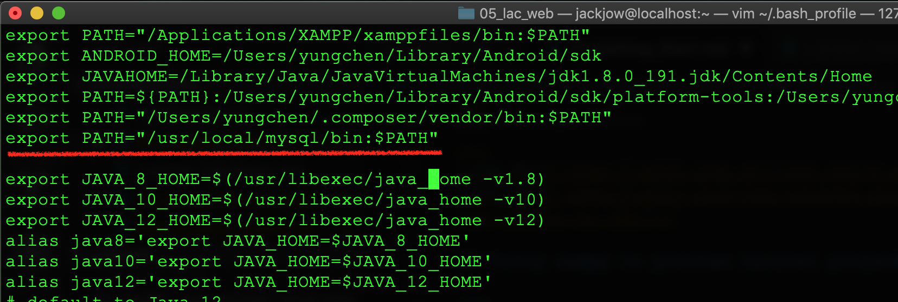 - Step 4: use
source ~/.bash_profileto apply the settings. 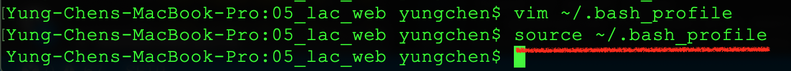 - Step 5: Set root's password of MySQL
- Step 5.1: run
sudo mysql startto start mysql server - Step 5.2: login to mysql server with
mysql -u rootinstruction in terminal. Note: the default password of root is blank (i.e. no password) - Step 5.3: exit mysql after stting root password
- Step 5.1: run
- Step 6: create a database for your Laravel project
- Step 6.1: login mysql server using root with instruction
mysql -u root -p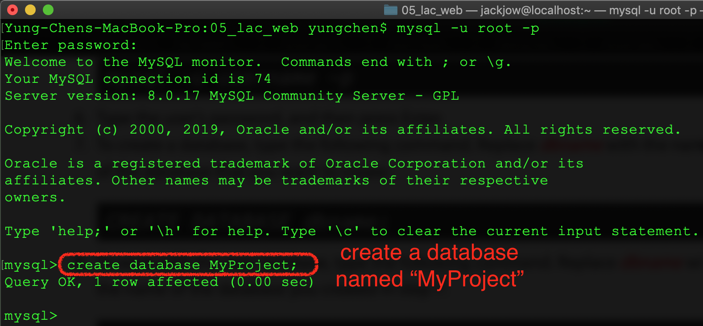
- Step 6.1: login mysql server using root with instruction
- Step 7: Download MySQL workbench and install it on Mac
- Step 8: manage database by using MySQL workbench 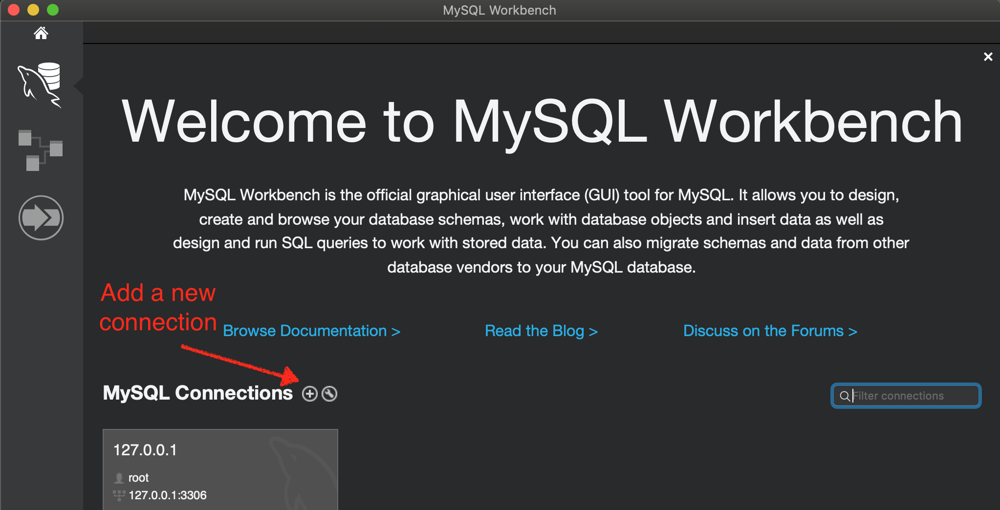 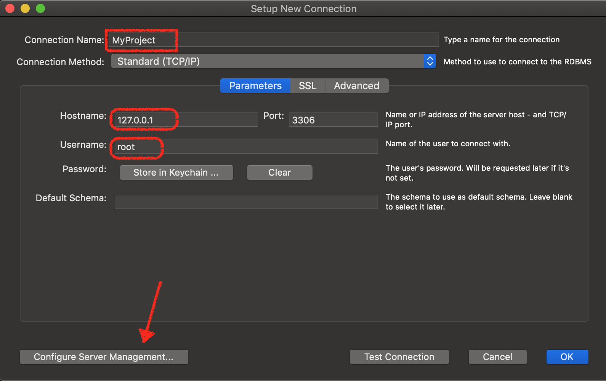 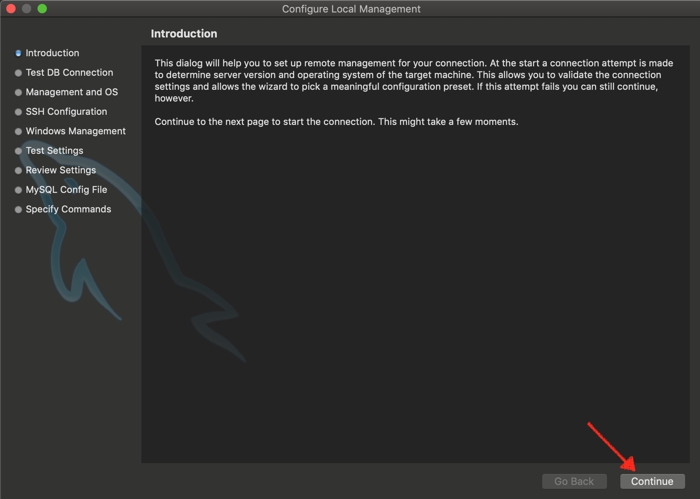 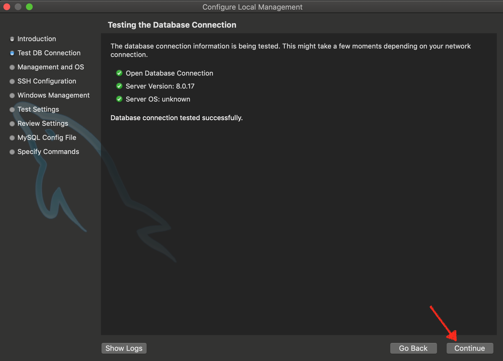 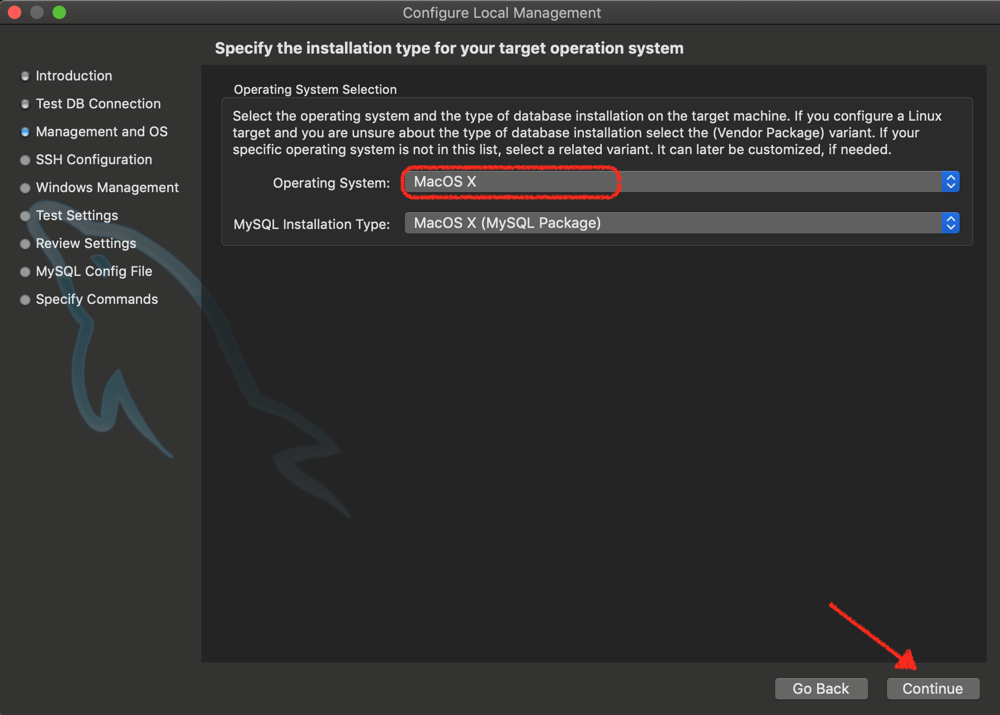 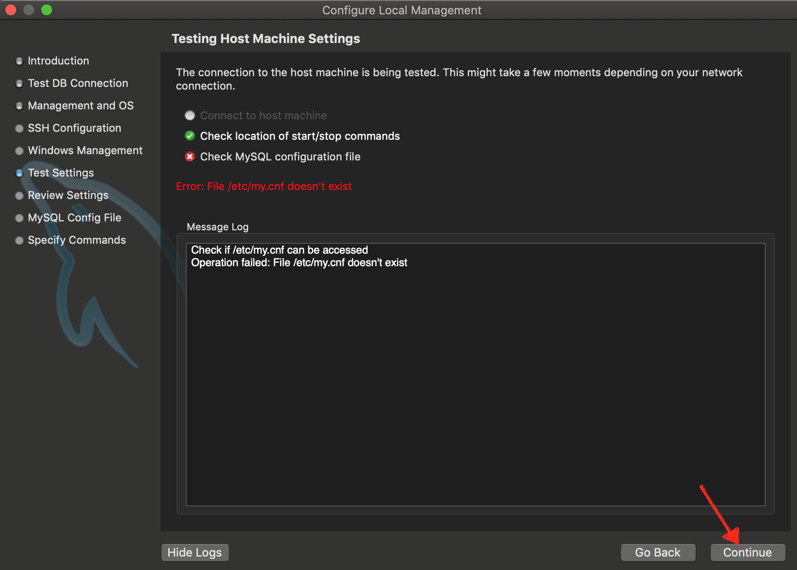 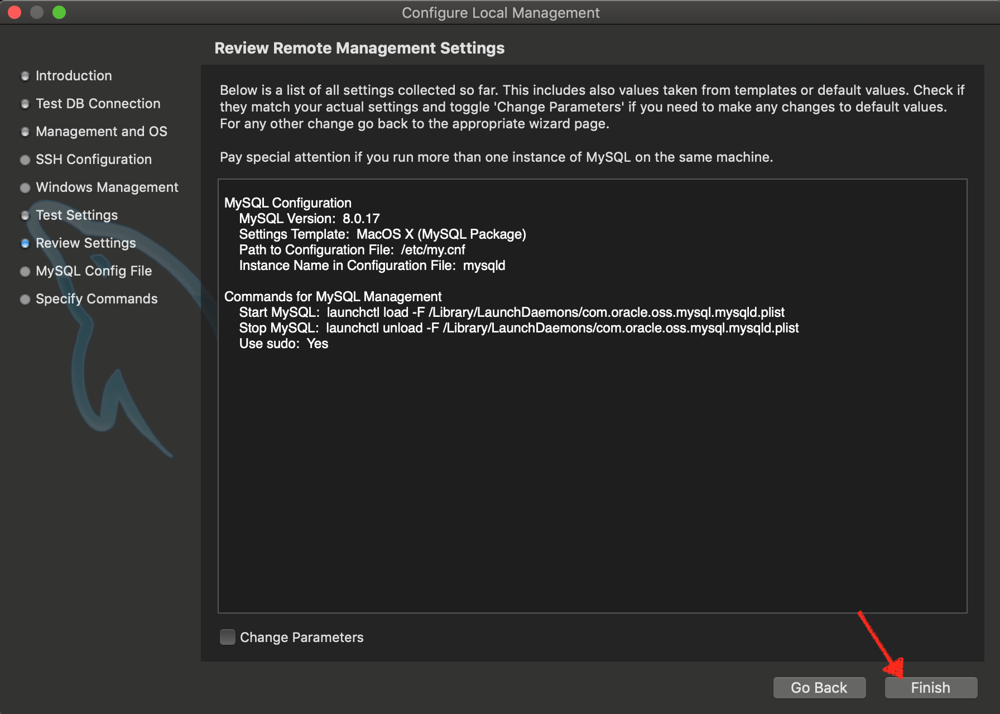 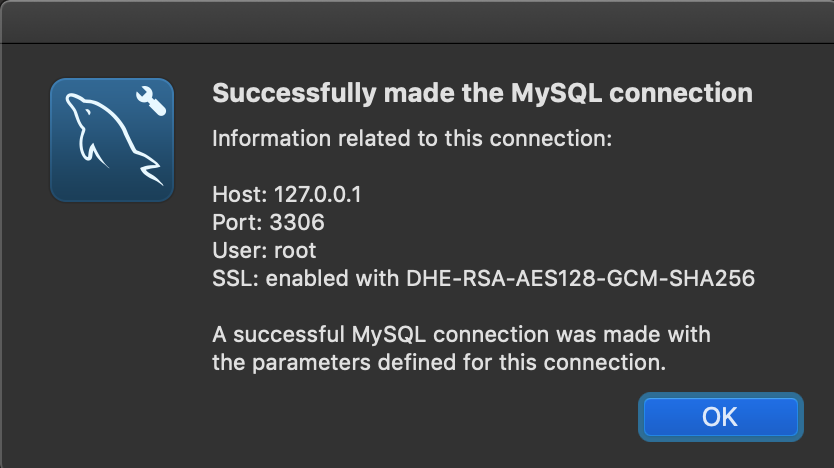 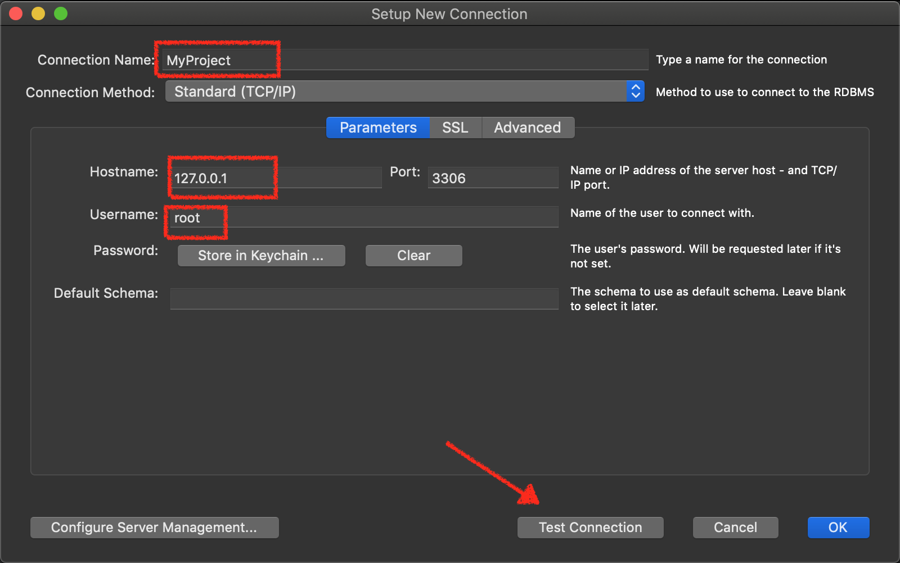 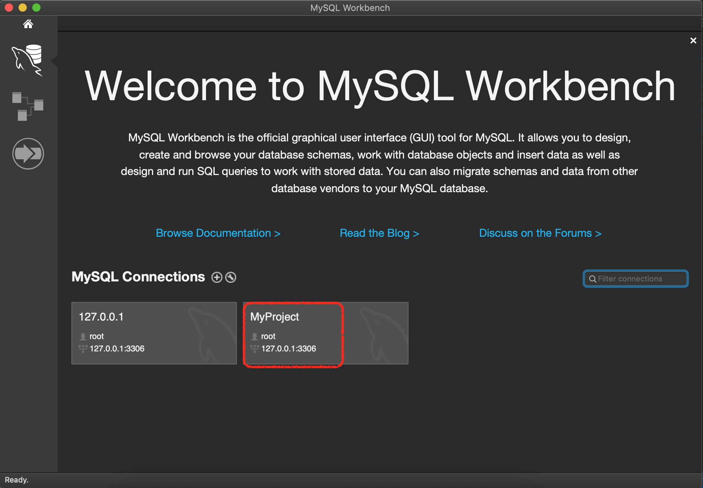